The Founders and Survivors project
Humanities computing
Why FOSS?
Challenges
Drupal in action: Data migration
Woolwich 24/aug/1821 to Hobart 15/dec/1821 – 113 days at sea
160 male convicts boarded, 159 survived/landed (not a bad record)
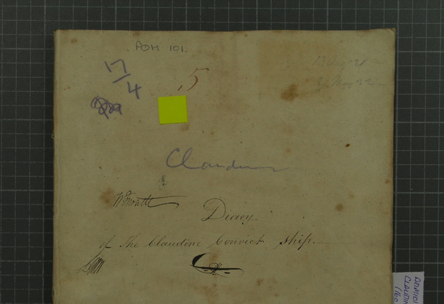
Journal kept by surgeon: medical and other events
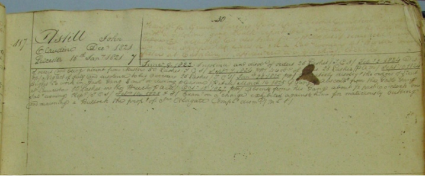
Carried on ship and continued during sentence: convict’s background, offence, trial, sentence, fate as convict
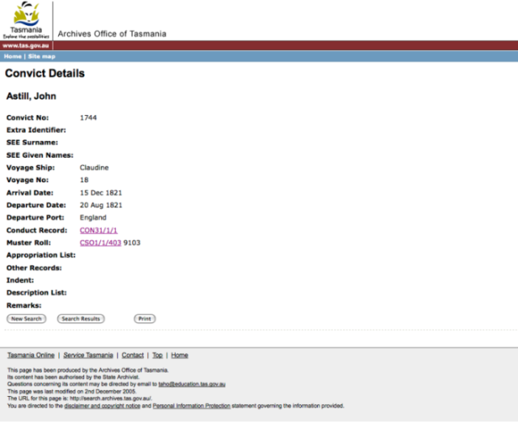
From paper to digital databases
Images of records; goal: transcribe, expand info available, access online
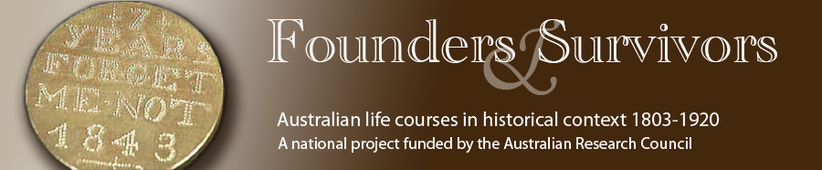
Collaboration between historians, demographers, epidemiologists… UTas, Unimelb, ANU…
Survivors of convict system –> founders of population
Transportation period, 1803-1853
~ 1 million rows of data
Quantifiable data: conduct registers, BDM…
Text: journals, newspaper reports
What happened to convicts after they were freed?
Links with genealogists for lives of convicts and their families.
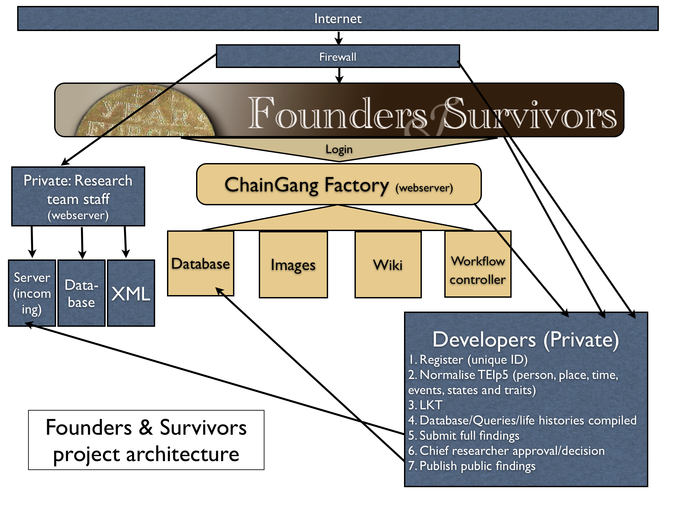
Quantitative and text data and images.
Separate areas/access for staff, volunteer researchers and public.
Web system built in Drupal.
Digitisation
Analyse large[r] amounts of material
Public access and collaboration
Following: some examples of humanities computing projects (diversity of sources and presentation)
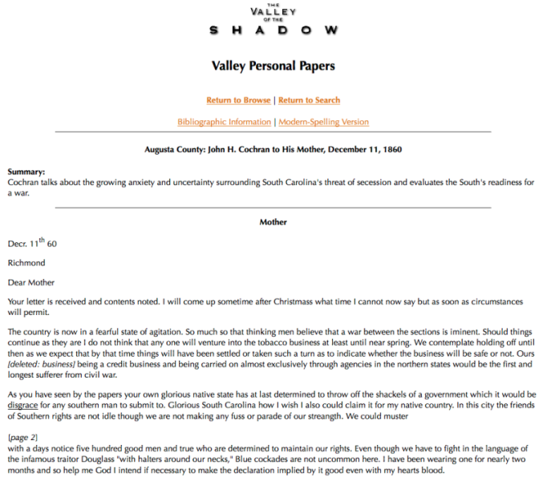
US Civil War
Transcriptions, images
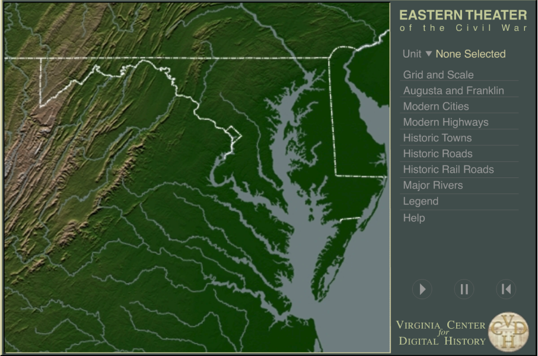
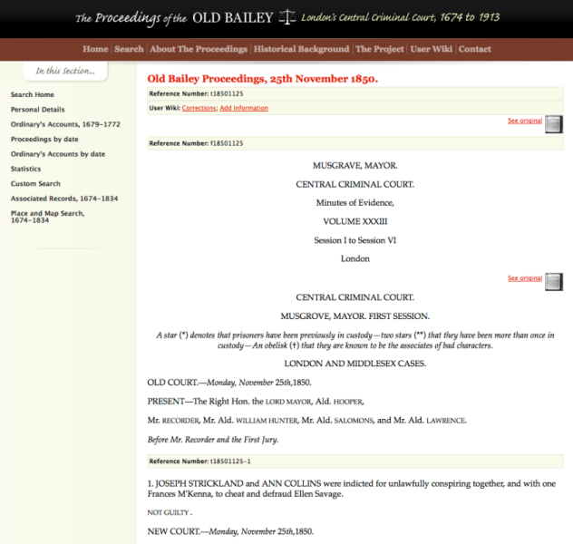
transcriptions, images, corrections, additions
Virgil’s Aeneid
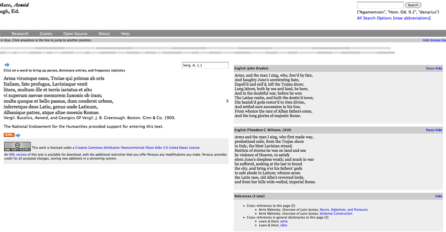
translations, literary cross-references
Index Thomisticus (1946)
Perseus
Digitisation
Data analysis
Collaboration
Documents
Images
Linked/cross-referenced presentation of sources
Examples from FAS and related sources
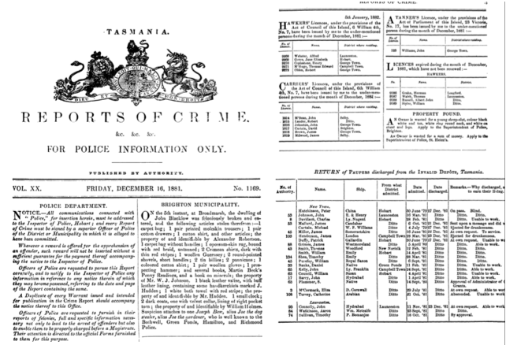
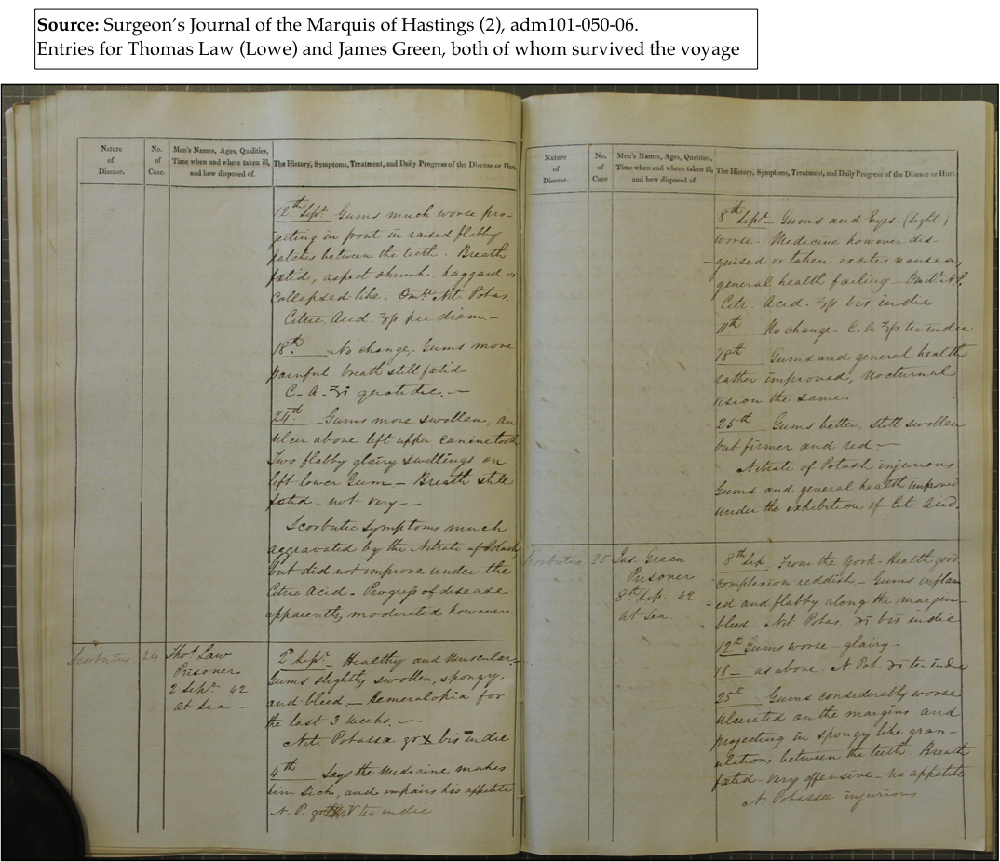
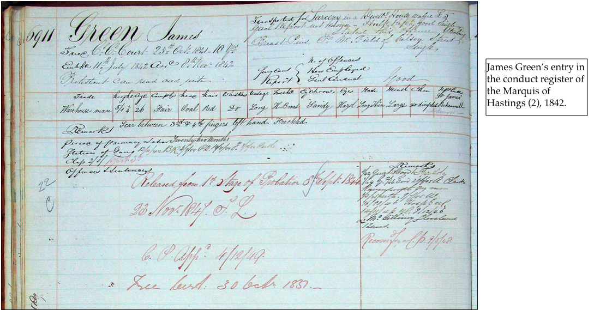
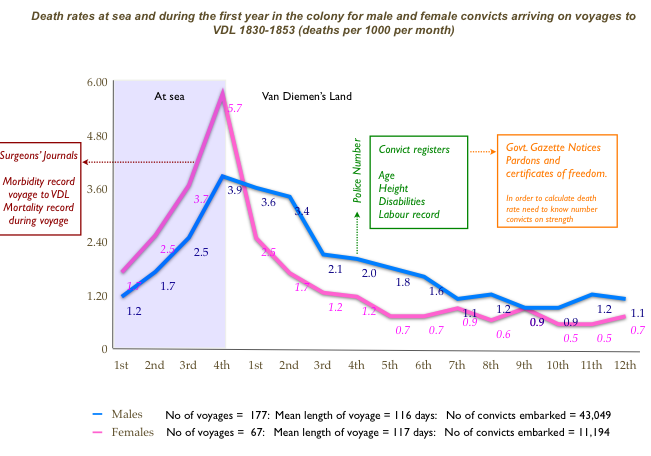
analysis from combined sources
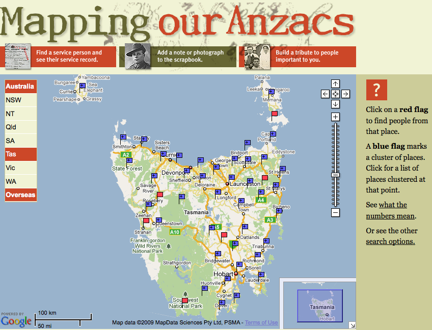
mapping: geographic links, local, personal
‘tribute to people important to you’
demystifying history
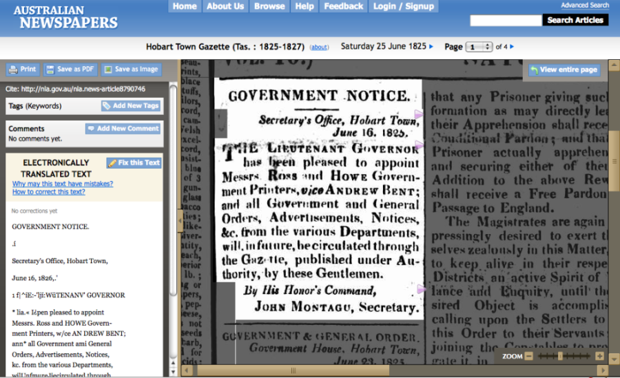
collaborative editing, corrections
Community of developers
Access
Values
Mutual support
Don’t reinvent the wheel
Using and adapting tools
developers on humanities computing projects may be isolated and inexperienced
Make archival sources and research results accessible to general public
Sharing data with other researchers
Public interest
Free access, free expression
Dialogue
Public participation
The Two Cultures and the Scientific Revolution
CP Snow, Rede Lecture, 1959
Literature/humanities vs science/tech
Translating between academics, IT professionals, diverse public audience
Different priorities, research questions
history, social sciences, public health, IT, non-tech users…
Non-geeks may not understand the values behind FOSS
Technology as magic
colleagues as well as public can provide usability challenges
Identity crisis
‘Digital humanities professional’?
Background – IT or academic?
Autonomy
Career progression
Where do humanities computing projects belong?
TODO
Drupal and humanities computing in action
Modular
Define our own content types and views
Define user roles
Workflow
Access –> Excel –> CSV
–> Drupal?
Database on the web
TODO URL
Define your own data structures in Drupal
TODO screenshot
http://drupal.org/project/rules
More powerful than core Trigger and Action modules
Generate a title for each node
{index number} | {convict name} ({ship name})
TODO URL
Define your own views of content
Expose a MySQL table or CSV file to Views
TODO local copy of Skitch screenshot
http://img.skitch.com/20100217-q5fi5t93y2nnr6p6jr3ks4isae.jpg
http://drupal.org/project/migrate
Map structure of external table to a Drupal data structure
Migrate Extras http://drupal.org/project/migrate_extras to migrate to CCK fields
TODO local copy of Skitch screenshot
http://img.skitch.com/20100217-mr3kkyq8gqmg4wumnqw844a387.jpg
TODO local copy of Skitch screenshot
http://img.skitch.com/20100217-t937n4rq5tqx1iqqxhdqne5gn.jpg
Web-based dashboard good for testing on small samples
Drush: the Drupal Shell http://drupal.org/project/drush
(out of memory issues)
Run drush migrate-import {content set} from cron
Approx. one week to migrate ~ 80,000 records
(manually) linking official index with public submissions
The Valley of the Shadow http://valley.lib.virginia.edu/
Old Bailey Online http://www.oldbaileyonline.org/
Perseus Digital Library http://www.perseus.tufts.edu/
Index Thomisticus http://www.corpusthomisticum.org/it/
Founders and Survivors http://www.foundersandsurvivors.org/
Mapping Our Anzacs http://mappingouranzacs.naa.gov.au/
Australian Newspapers (National Library) http://newspapers.nla.gov.au/
Essays in Humanities Computing http://www.digitalhumanities.org/Essays/